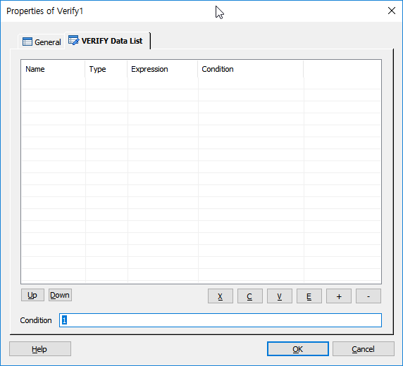
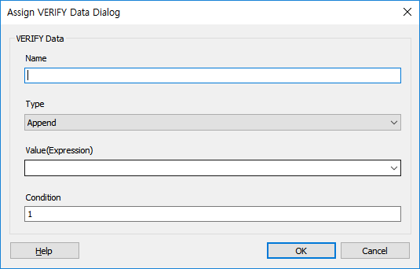

음성인식 결과를 SLEE의 기본 항목 외에 User Data 부분을 추가 하여 저장 할 수 있도록 합니다. 주로 통계 처리에 많이 사용 되며 End.SSFX 에 구현하여 전화가 종료된 경우 최종 CDR 을 저장 할때 VERIFY도 같이 저장 됩니다.
ICON
PROPERTIES
 VERIFY Data List
VERIFY Data List

List Box : 여러개의 VERIFY 항목을 등록 할 수 있습니다.
Up Button : 선택한 VERIFY 데이터를 위로 이동 합니다.
Down Button : 선택한 VERIFY 데이터를 아래로 이동 합니다.
X Button : 선택한 리스트를 잘라냅니다.(Ctrl+X)
C Button : 선택한 리스트의 내용을 복사 합니다.(Ctrl+C)
V Button : 복사한 리스트의 내용을 붙여넣기 합니다.(Ctrl+V)
E Button : 선택한 VERIFY 데이터를 수정 합니다.
+ Button : VERIFY 데이터를 추가 합니다.
- Button : 선택한 VERIFY 데이터를 삭제 합니다.
Condition : VERIFY Item 의 수행 조건을 지정 합니다.

Name : VERIFY 항목 이름을 지정 합니다.( Verify 항목)
Type : VERIFY 항목의 추가/삭제/갱신 작업을 지정 합니다.
Append : VERIFY 항목을 새로 추가 합니다.
Delete : 기존 VERIFY 항목을 삭제 합니다.
Update : 기존 VERIFY 항목을 갱신 합니다.
Value(Expression) : VERIFY 항목 이름에 데이터를 저장 합니다.
Condition : VERIFY 항목의 조건을 지정 합니다.
RESULT
None.
RELATED
None.